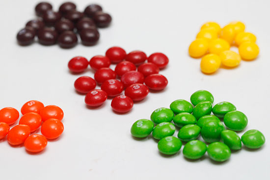

skittle_list <-
readRDS( url ("https://cronkitedata.s3.amazonaws.com/rdata/skittle_list.RDS"))19 Aggregating with Skittles
Traditionally, packages of Skittles contained 60 pieces of candy in five colors: Yellow, purple, orange, red and green. If they were poured out and sorted into their colors, it might look something like this:

Instead of sorting them out that way, though, imagine typing each candy into a row of a spreadsheet, with an ID number (to keep the original order), and the color of each skittle. The list would have 60 rows.
19.1 Skittles by color
The following code chunk reads the list of Skittles from a location on the web:
Here’s what that list looks like in a sortable, filterable table. (You’ll learn this soon):
Try filtering the list above to see how many of each color was in this particular package. (Look at the number of rows at the bottom after filtering the list in place.)
Compute how many Skittles of each color
To keep the computation simple, use this code chunk to create a new data frame of five rows and two columns: The color, and the number of Skittles.
skittle_counts <-
skittle_list |>
group_by ( color) |>
summarize ( skittles = n() )Now print the list:
skittle_countsTake a look at the new data frame carefully. It’s no longer a one-by-one list of each Skittle. Instead, it’s a summary of the number of Skittles by color. The original color column still exists because it was in the group_by statement, but the ID is gone. More importantly, there’s a new column called skittles, which is a count of the number of skittles for each row. There are only five rows, not 60.
There are an unequal number of Skittles in this package, but it’s hard to express them in numbers we understand well. To do that, you’ll want to compute a percent of total.
Compute a percent of total
To compute a percent of total, you’ll use the formula category / total * 100. However, we have no total here. One way to do it divide each row by 60, since we know that’s how many rows were in the original. Try it:
skittle_counts |>
mutate ( percent = skittles / 60 * 100)But a more efficient, and more reproducible way to do it would be to let R compute the total into a new column. This suggests you’ll need a mutate verb:
skittle_counts |>
mutate ( total_skittles = sum ( skittles )) |>
mutate ( percent = skittles / total_skittles * 100 )19.2 Add a column: Who got each Skittle?
Let’s make this a little more complex. I’ve randomly split up the Skittles between me an my husband. The new data frame that includes our names is loaded this way:
skittle_name_list <-
readRDS( url ("https://cronkitedata.s3.amazonaws.com/rdata/skittle_name_list.RDS"))Again, you can filter it to see how many orange Skittles Sarah got, or how many purple ones Duke got. This could get old fast if you had to do this for both people and all five colors.
But grouping it can make short work of it. This example saves it into a new data frame with 10 rows and three columns. The “.groups=”drop”” part removes any default grouping left over by default.
skittle_distribution <-
skittle_name_list |>
group_by ( color, whose) |>
summarize ( skittles = n() ,
.groups = "drop")Look at it:
skittle_distributionPivot to view the names side-by-side
That’s hard to read - let’s pivot it so that the names are across the top and the colors down the side:
skittle_distribution |>
pivot_wider ( id_cols = color,
names_from = whose,
values_from = skittles)Sarah never got any fewer Skittles than Duke – they were all higher, except for the tie in yellow ones.
Skittle percentages by person
But was she more or less likely to get any given color? You need percents for that:
Start with the total by person :
skittle_distribution |>
group_by ( whose ) |>
mutate ( person_total = sum ( skittles ) ) Notice that grouping by whose Skittles creates a total of 23 for Duke and 37 for Sarah. Now we can compute the percent by adding one line to the query:
skittle_distribution |>
group_by ( whose ) |>
mutate ( person_total = sum ( skittles ) ) |>
mutate ( percent = skittles / person_total * 100 )To say this in English, we can say that “Duke was less likely to get green Skittles, but more likely to get Yellow ones” based on a comparison of those percentages.
That’s really hard to read, though.
Pivot again for easier reading
Instead, we want to turn the chart into something that has the colors down the side, and the names across the top. Each column would then add up to 100%.
skittle_distribution |>
group_by ( whose ) |>
mutate ( person_total = sum ( skittles ) ) |>
mutate ( percent = skittles / person_total * 100 ) |>
pivot_wider ( id_cols = color,
names_from = whose,
values_from = percent)Reading left to right, you can see that Sarah was more likely to get green and red Skittles, but much less likely to get yellow, purple and orange ones, controlling for the larger of number of Skittles she got in the first place.
19.3 Takeaway
If you could follow this Skittles example, imagine all of the stories that depend on exactly this construct: Are Black motorists more likely to be searched than white? Are you more likely to die if you got a COVID vaccine? Is a homicide in Baltimore more likely to be solved than in Chicago?
They all depend on two-way tables like this one, with the independent variable listed down the side, and the dependent variable listed across the top , with the “column percents” in the middle.